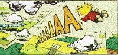

Ero adagiato mollemente sul banco di scuola, come un vecchio sacco di patate dimenticato da tutti; ordinati, altri sacchi erano davanti e affianco a me. Non so se erano attenti alla lezione o se semplicemente ricopiavano quello che veniva scritto alla lavagna, comunque non che me ne importasse più di tanto, guardavo fuori e vedendo l'azzurro del cielo che sembrava dormire tranquillamente nelle sua infinità, pensavo a quale strano caso ero destinato, giacché mi sentivo estraneo a tutto fuorché al cielo. Ad un tratto, come se proprio allora fosse scattato un qualche meccanismo notai che l'intera aula iniziò, adagio, ad innalzarsi, i banchi affiancati al mio incominciarono a sollevarsi, nel giro di un minuto erano già a circa venti centimetri, volli vedere la lavagna e accorgendomi di come non ero stato attento, tentai di ricopiare sul foglio di quaderno, ma più copiavo più non capivo gli strani segni lasciati dalla biro, e fu allora che il pavimento si spalancò sotto i miei piedi e sprofondai nel buio assoluto. Caddi, come sacco di patate che cade. Mi mancò il coraggio di tenere gli occhi aperti, così potevo sentire il foglio di pesantezza che mi trascinava giù, e sentivo il vento caldo che sferzando le membra saliva vorticosamente. Adagio adagio mi fermai, o così mi sembrò, perché aprendo gli occhi e vedendo buio in tutti gli angoli di quella stanza nera, non potevo confrontarmi con nessuna cosa in movimento o ferma. Di fatto galleggiavo senza sapere dove fossi, non me ne preoccupavo e a dire il vero ero quasi felice di essermi allontanato da tutto e da tutti, fu allora che una piccola sfera di luce passò con rapidità incredibile svanendo nell'oscurità, girandomi dalla parte donde arrivò, ne vidi altre, più piccole e altre più grandi che saettavano, fischiando. Crebbero in numero smisurato, iniziai a credere di esserne l'obbiettivo finale, mi accorsi ben presto invece, che ero io a viaggiare verso di loro a velocità elevatissima e più crescevano di numero, più aumentavo la velocità. Il numero era così smisurato che molte di quelle sfere parevano accoppiarsi in globi di luce più grandi, e mano a mano che continuavo quella discesa folle, esplosioni fatte di lampi tentavano di accecarmi, e amalgamandosi gli uni con gli altri, tutto pulsava ritmicamente di luce. Notai in lontananza un brillio azzurrino, e come un sasso che cadendo nell'acqua forma quelle onde circolari una di seguito all'altra, il brillio si allargò in cerchi che si aprivano davanti ai miei occhi. La rapidità con cui mi muovevo fu più veloce del pensiero, non feci in tempo ad accorgermi di scontrarmi contro quelle onde, il tuffo nell'azzurro mi bloccò il respiro e spalancando gli occhi capii di trovarmi sospeso a parecchi chilometri d'altezza dal terreno, così che vedendo i tetti di case, le strade, le montagne e i fiumi, ebbi paura e gridai, non un filo di voce uscì dalla bocca. Precipitavo e ora avevo il timore di finire presto la mia esistenza spiaccicandomi al suolo, pochi secondi di caduta libera e rallentando come se fossi diventato una foglia, vidi che scendevo verso la scuola, dal tetto si spalancò un'ultima finestra di luce che risucchiandomi, mi atterrò dolcemente alla mia solita sedia, al mio solito banco. Alzai gli occhi, ma come sempre nessuno si accorse di cosa fosse accaduto.